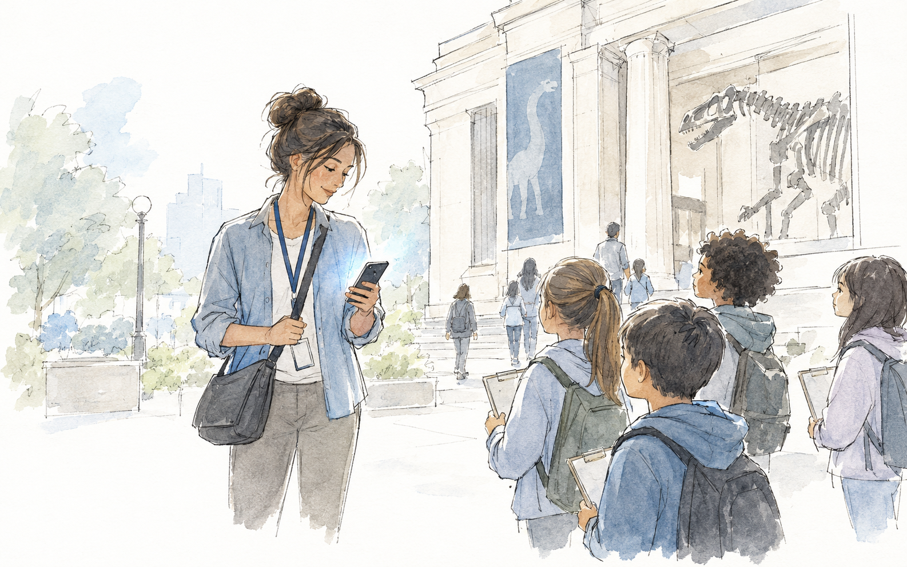

A mobile companion for teachers
Product Design, UX Research

A mobile companion for teachers
Product Design, UX Research
A connected communication ecosystem for K-12 families
UX Strategy, Service Design
Themes
Workshops and techniques that surface perspectives and expertise too often drowned out by the loudest voice in the room — while keeping their goals paramount. Then synthesizing those diverse feedback streams into one clear signal.
How to get the best data: deep listening and real empathy, even when the stakeholder conversations get messy. The story is always in there — if you listen for it.
Exceptional experiences come from anticipating needs before they’re spoken. I hold the front end and the back end to the same standard, and bridge the two.
A good building has good bones. This work often happens quietly, in the background — but staying looped in on what’s coming next is what keeps it sound.
Vision
Greater than the sum of its parts.
Taking these inputs and structures, and finessing them into a simple, intuitive vision — that’s my secret sauce.
About
Collaboration, inclusion, and play shape everything I design.
They come from two places. Jazz taught me that great work is improvised together, by listening and responding. Living abroad to teach English taught me how much perspective matters, and how often the people we design for see things differently than we do.
I do my best work in early design and vision stages, zooming out to orchestrate every touchpoint of an experience and zooming in to make each moment feel human.
You’ll usually find me hiking with my German Shepherd mix, taking an improv class or dancing salsa.